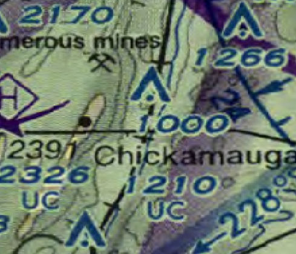

Enhanced Compressed Raster Graphics (MIL-PRF-32283) came out of the need to improve CADRG.
ECRG has DPI of 254 or greater. The compression is JPEG 2000 with a compression ratio of 20:1.
The raster is 24bits in depth and thus does not suffer from colour loss issues that CADRG suffers from.
Current DOD plans are to replace CADRG as the preferred source for chart data.
To load the data select the table of contents file 'TOC.XML'.
Note: Occasionally we have found that the TOC.XML is located in the wrong directory. The file is XML and you can look at the file to see what the relative location of the frame files is.
